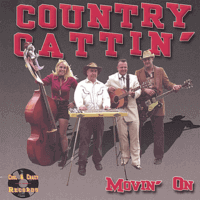

Country Cattin' - Movin' On (Album, 2005)
01 - Call Me Lonesome (3:09)
02 - Honky Tonk Man (2:05)
03 - Hangmans Boogie (2:24)
04 - See You In My Dreams (2:48)
05 - Pinball Millionaire (2:31)
06 - I Got A Problem (2:21)
07 - Blue Days Black Nights (2:01)
08 - Hocus Pocus (1:44)
09 - I Believe In Love (2:27)
10 - Convicted (2:28)
11 - Dear John (2:28)
12 - If Your Ever Lonely (3:03)
13 - Blues Come Around (2:33)
14 - Mobilin' Baby (2:09)
15 - Just Because (2:39)
16 - Movin' On (2:39)
© Cool & Crazy Records :: [COOL CD005]
Notes
Review
023/366 (Project 366)
Sweetest Country sound with honky tonkin', rockin' and Hillbilly flavour. Country Cattin' sings almost perfect hits, originally (or well-know) performed by or authored by Ray Price, Hank Snow, Hank Williams, Gene O'Quin, Dave Brown, Chet Atkins, Lefty Frizzell, Merle Travis, Elvis Presley, Buddy Holly and Cowboy Copas. Melodies are full of traditional gems. No drums, so light!
Very gentle and tender vocals, ultimately smooth Steel guitar (Chris Cummings), wonderful rhythm section and blazing guitar. Sounds very light and quite authentic. Astonishingly beautiful songs. Else one release that I should to listen some hours carefully and with enough time for completed review design.